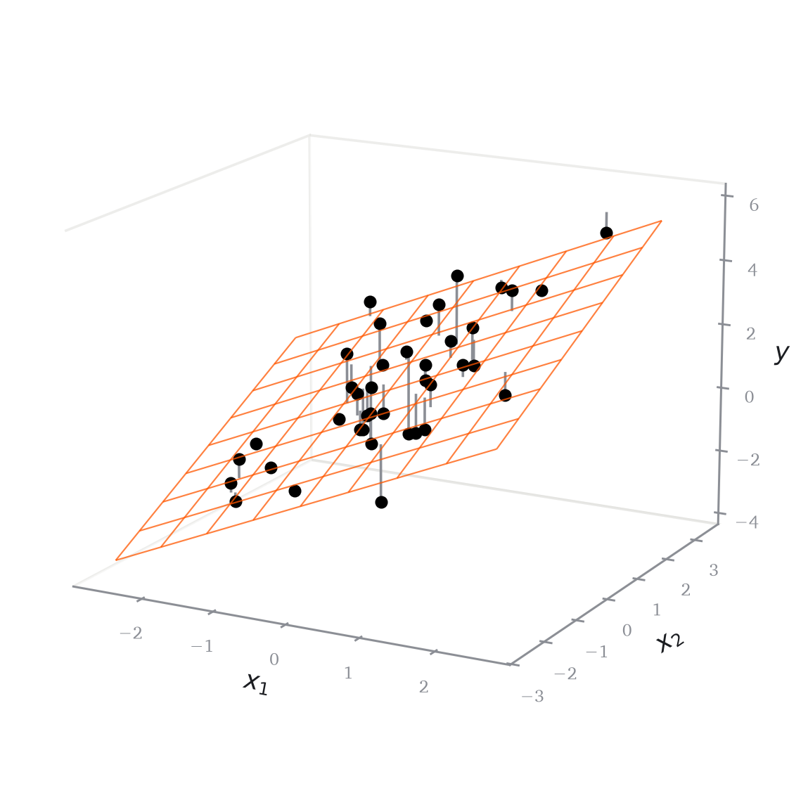
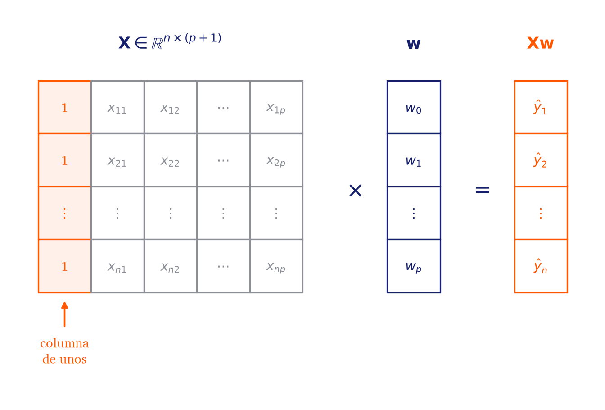
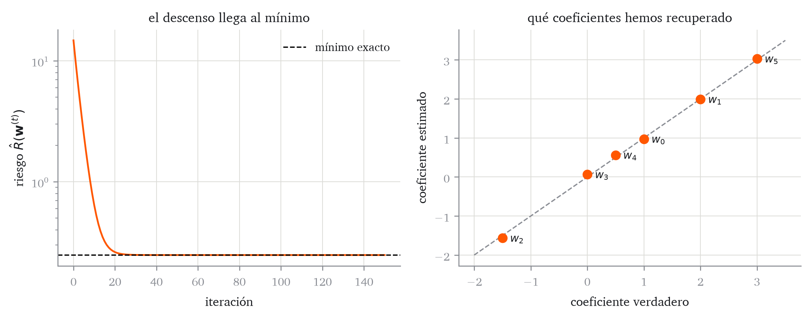

3 Modelos lineales con muchas variables
Matrices, gradientes y una implementación reutilizable
De una recta a muchas variables predictoras
El capítulo anterior terminó con un algoritmo de aprendizaje completo para una recta: un modelo probabilístico produce una pérdida, la pérdida produce un riesgo empírico y el gradiente de ese riesgo permite actualizar los parámetros para llegar a los valores que minimizan el riesgo. Usando este procedimiento, aprendimos a ajustar dos parámetros \(w_0\) y \(w_1\). No obstante, los modelos modernos cuentan con muchos parámetros a ajustar (algunos LLMs tienen hasta billones). Necesitamos pues aprender a trabajar con modelos con muchas variables predictoras (y por ende muchos parámetros). Empezaremos con el caso sencillo de un modelo lineal con varias variables predictoras.
Código
import torch
from matplotlib import pyplot as plt
torch.manual_seed(0)
n_plano = 40
X_plano = torch.randn(n_plano, 2)
w_plano = torch.tensor([1.0, 1.0, 0.8])
ajuste_plano = w_plano[0] + X_plano @ w_plano[1:]
y_plano = ajuste_plano + 0.9 * torch.randn(n_plano)
fig = plt.figure(figsize=(6, 4.4))
ax = fig.add_subplot(111, projection="3d")
for eje in (ax.xaxis, ax.yaxis, ax.zaxis):
eje.pane.set_facecolor("white")
eje.pane.set_edgecolor("#dcdcd8")
ax.grid(False)
rejilla_1, rejilla_2 = torch.meshgrid(
torch.linspace(-2.6, 2.6, 9), torch.linspace(-2.6, 2.6, 9),
indexing="ij",
)
ax.plot_wireframe(
rejilla_1.numpy(), rejilla_2.numpy(),
(w_plano[0] + w_plano[1] * rejilla_1 + w_plano[2] * rejilla_2).numpy(),
color="#ff5700", lw=0.6, alpha=0.75,
)
for i in range(n_plano):
ax.plot(
[X_plano[i, 0].item()] * 2, [X_plano[i, 1].item()] * 2,
[y_plano[i].item(), ajuste_plano[i].item()],
color="#8b8e95", lw=1.0,
)
ax.scatter(
X_plano[:, 0].numpy(), X_plano[:, 1].numpy(), y_plano.numpy(),
color="black", s=16, depthshade=False,
)
ax.set_xlabel("$x_1$", labelpad=-4)
ax.set_ylabel("$x_2$", labelpad=-4)
ax.set_zlabel("$y$", labelpad=-6)
ax.tick_params(labelsize=7, pad=-1)
ax.view_init(elev=16, azim=-62)
plt.tight_layout()El modelo lineal-gaussiano múltiple
La extensión natural del modelo con el que hemos trabajado al caso con \(p\) variables predictoras \(x_1, x_2, \ldots, x_{p}\) es la siguiente.
Definición 3.1 (Modelo lineal-gaussiano múltiple) Dadas \(p\) variables predictoras, el modelo lineal-gaussiano múltiple supone que cada respuesta se genera de forma independiente según
\[ y_i\,\vert\,\mathbf{x}_i \sim\mathcal{N}\Bigl( w_0+\sum_{j=1}^{p}w_jx_{ij},\; \sigma^2 \Bigr), \qquad i=1,\ldots,n, \tag{3.1}\]
donde \(x_{ij}\) es el valor de la variable predictora \(j\) en la observación \(i\).
Para escribir el modelo de forma más compacta introducimos la siguiente notación.
Definición 3.2 (Vector de variables predictoras, vector de coeficientes y convenio de la constante) El vector de variables predictoras de la observación \(i\) y el vector de coeficientes son
\[ \mathbf{x}_i=(x_{i0},x_{i1},\ldots,x_{ip})^{\mathsf{T}}\in\mathbb{R}^{p+1}, \qquad \boldsymbol{w}=(w_0,w_1,\ldots,w_{p})^{\mathsf{T}}\in\mathbb{R}^{p+1}, \]
donde se toma \(x_{i0}=1\) para toda observación. Con ese convenio, la media de Ecuación 3.1 es el producto escalar de los dos vectores:
\[ \mathbf{x}_i^{\mathsf{T}}\boldsymbol{w} =\left\langle \mathbf{x}_i, \boldsymbol{w} \right\rangle =\sum_{j=0}^{p}w_jx_{ij} =w_0+\sum_{j=1}^{p}w_jx_{ij} =\hat{y}_i. \tag{3.2}\]
El modelo entero se escribe entonces \(y_i\,\vert\,\mathbf{x}_i\sim\mathcal{N}\bigl(\mathbf{x}_i^{\mathsf{T}}\boldsymbol{w},\sigma^2\bigr)\), con independencia de cuántas variables predictoras haya.
Con \(p=1\) el convenio devuelve la recta del capítulo anterior: \(\mathbf{x}_i^{\mathsf{T}}\boldsymbol{w}=w_0+w_1x_i\), que es Ecuación 1.4.
Log-verosimilitud y error cuadrático medio
Habiendo definido el modelo, para aprender sus parámetros hace falta un criterio. Este se obtiene igual que en el capítulo anterior: se escribe la log-verosimilitud del modelo y se aisla la parte de ella que depende de \(\boldsymbol{w}\).
Ejercicio 3.1 Repite para Ecuación 3.1 el razonamiento de Teorema 2.1 y Corolario 2.1.
- Escribe la log-verosimilitud \(\ell(\boldsymbol{w},\sigma)\) de la muestra, usando que las observaciones son independientes.
- Separa los términos que no dependen de \(\boldsymbol{w}\) y comprueba que el resto es \(-\frac{n}{2\sigma^2}\hat{R}(\boldsymbol{w})\), donde \[ \hat{R}(\boldsymbol{w}) =\frac{1}{n}\sum_{i=1}^{n}\bigl(y_i-\mathbf{x}_i^{\mathsf{T}}\boldsymbol{w}\bigr)^2 . \tag{3.3}\]
- Deduce que, para \(\sigma>0\) fijo, maximizar la log-verosimilitud equivale a minimizar Ecuación 3.3.
Nuestro objetivo será pues buscar:
\[ \hat{\boldsymbol{w}}\in\mathop{\mathrm{arg\,min}}_{\boldsymbol{w}}\hat{R}(\boldsymbol{w}), \]
con \(\hat{R}\) dado por Ecuación 3.3, que es el riesgo empírico de Definición 2.4 con pérdida cuadrática.
Todavía se puede simplificar más la notación. En Ecuación 3.3 quedan un sumatorio sobre las \(n\) observaciones y, dentro de cada sumando, un producto escalar sobre las \(p+1\) coordenadas. Los dos desaparecen si reunimos las observaciones en una matriz.
La matriz de diseño
Empecemos por recordar cómo se mide el tamaño de un vector.
Definición 3.3 (Norma euclídea) La norma euclídea de un vector \(\mathbf v=(v_1,\ldots,v_d)^{\mathsf{T}}\in\mathbb{R}^d\) es el número no negativo \(\left\lVert \mathbf v \right\rVert\) definido por
\[ \left\lVert \mathbf v \right\rVert^2 =\mathbf v^{\mathsf{T}}\mathbf v =\sum_{j=1}^{d}v_j^2 . \tag{3.4}\]
La norma al cuadrado de un vector es, por tanto, la suma de los cuadrados de sus componentes. Escribiremos siempre \(\left\lVert \mathbf v \right\rVert\) sin subíndice, y siempre significará esto.
Reunimos ahora las \(n\) observaciones en un único objeto.
Definición 3.4 (Matriz de diseño) La matriz de diseño de la muestra es la matriz que tiene por filas los vectores de predictoras traspuestos:
\[ \mathbf{X}=\begin{pmatrix}\mathbf{x}_1^{\mathsf{T}}\\ \mathbf{x}_2^{\mathsf{T}}\\ \vdots\\ \mathbf{x}_{n}^{\mathsf{T}}\end{pmatrix} =\begin{pmatrix} 1 & x_{11} & \cdots & x_{1p}\\ 1 & x_{21} & \cdots & x_{2p}\\ \vdots & \vdots & & \vdots\\ 1 & x_{n1} & \cdots & x_{np} \end{pmatrix} \in\mathbb{R}^{n\times(p+1)} . \]
Cada fila es una observación y cada columna una variable predictora. La primera columna es de unos, por el convenio de Definición 3.2, y es la que representa el intercepto.
El producto de una matriz por un vector se define de modo que la componente \(i\) del resultado es el producto escalar de la fila \(i\) por el vector. Aplicado a \(\mathbf{X}\) y a \(\boldsymbol{w}\), eso da
\[ \mathbf{X}\boldsymbol{w} =\begin{pmatrix}\mathbf{x}_1^{\mathsf{T}}\boldsymbol{w}\\ \mathbf{x}_2^{\mathsf{T}}\boldsymbol{w}\\ \vdots\\ \mathbf{x}_{n}^{\mathsf{T}}\boldsymbol{w}\end{pmatrix} =\begin{pmatrix}\hat{y}_1\\ \hat{y}_2\\ \vdots\\ \hat{y}_{n}\end{pmatrix} \in\mathbb{R}^{n}. \tag{3.5}\]
El objeto \(\mathbf{X}\boldsymbol{w}\) es el vector de las \(n\) predicciones del modelo.
Código
AZUL, GRIS, NARANJA = "#151f6c", "#8b8e95", "#ff5700"
def celda(ax, columna, fila, texto, color=GRIS, relleno="white"):
ax.add_patch(plt.Rectangle(
(columna, -fila - 1), 1, 1,
facecolor=relleno, edgecolor=color, lw=0.9,
))
ax.text(columna + 0.5, -fila - 0.5, texto, ha="center", va="center",
fontsize=8, color=color)
# En las etiquetas de figura solo cabe LaTeX corriente: matplotlib no conoce
# las macros de _macros.tex.
diseno = [
["1", r"$x_{11}$", r"$x_{12}$", r"$\cdots$", r"$x_{1p}$"],
["1", r"$x_{21}$", r"$x_{22}$", r"$\cdots$", r"$x_{2p}$"],
[r"$\vdots$"] * 5,
["1", r"$x_{n1}$", r"$x_{n2}$", r"$\cdots$", r"$x_{np}$"],
]
fig, ax = plt.subplots(figsize=(9, 3.6))
for f, fila in enumerate(diseno):
for c, texto in enumerate(fila):
if c == 0:
celda(ax, c, f, texto, NARANJA, "#fff1ea")
else:
celda(ax, c, f, texto)
ax.text(2.5, 0.6,
r"$\mathbf{X} \in \mathbb{R}^{n\times(p+1)}$",
ha="center", fontsize=10, color=AZUL)
ax.annotate("", xy=(0.5, -4.1), xytext=(0.5, -4.7),
arrowprops=dict(arrowstyle="-|>", color=NARANJA, lw=1.0,
mutation_scale=8))
ax.text(0.5, -4.8, "columna\nde unos", ha="center", va="top", fontsize=8,
color=NARANJA)
ax.text(6.0, -2.2, r"$\times$", ha="center", fontsize=13, color=AZUL)
for f, texto in enumerate([r"$w_0$", r"$w_1$", r"$\vdots$", r"$w_p$"]):
celda(ax, 6.6, f, texto, AZUL)
ax.text(7.1, 0.6, r"$\mathbf{w}$", ha="center", fontsize=10, color=AZUL)
ax.text(8.4, -2.2, r"$=$", ha="center", fontsize=13, color=AZUL)
for f, texto in enumerate([r"$\hat{y}_1$", r"$\hat{y}_2$", r"$\vdots$",
r"$\hat{y}_n$"]):
celda(ax, 9.0, f, texto, NARANJA)
ax.text(9.5, 0.6, r"$\mathbf{X}\mathbf{w}$", ha="center", fontsize=10,
color=NARANJA)
ax.set(xlim=(-0.5, 10.5), ylim=(-6.0, 1.3))
ax.set_aspect("equal", adjustable="box")
ax.set_axis_off()
plt.tight_layout()
Con esto, podemos simplificar la notación.
Proposición 3.1 (El riesgo cuadrático empírico en forma matricial) Para el modelo lineal con matriz de diseño \(\mathbf{X}\),
\[ \hat{R}(\boldsymbol{w}) =\frac{1}{n}\sum_{i=1}^{n}\bigl(y_i-\mathbf{x}_i^{\mathsf{T}}\boldsymbol{w}\bigr)^2 =\frac{1}{n}\left\lVert \mathbf{X}\boldsymbol{w}-\mathbf{y} \right\rVert^2 . \tag{3.6}\]
Demostración. Por Ecuación 3.5, la componente \(i\) del vector \(\mathbf{X}\boldsymbol{w}-\mathbf{y}\) es \(\mathbf{x}_i^{\mathsf{T}}\boldsymbol{w}-y_i\). Por Ecuación 3.4, su norma al cuadrado es la suma de los cuadrados de esas componentes,
\[ \left\lVert \mathbf{X}\boldsymbol{w}-\mathbf{y} \right\rVert^2 =\sum_{i=1}^{n}\bigl(\mathbf{x}_i^{\mathsf{T}}\boldsymbol{w}-y_i\bigr)^2 =\sum_{i=1}^{n}\bigl(y_i-\mathbf{x}_i^{\mathsf{T}}\boldsymbol{w}\bigr)^2 , \]
donde la última igualdad se debe a que un cuadrado no distingue el signo. Dividiendo por \(n\) se obtiene Ecuación 3.6.
Como \(1/n\) es una constante positiva, por Lema 2.1 no cambia dónde está el mínimo, y se puede omitir. El problema de aprendizaje es, por tanto, el siguiente:
\[ \hat{\boldsymbol{w}}\in\mathop{\mathrm{arg\,min}}_{\boldsymbol{w}}\left\lVert \mathbf{X}\boldsymbol{w}-\mathbf{y} \right\rVert^2 . \tag{3.7}\]
Esta es la forma en la que el problema de mínimos cuadrados aparece en la bibliografía, y la que usaremos de aquí en adelante.
Para ilustrar la resolución de este problema,en lo que sigue; trabajaremos con datos simulados de \(p=5\) variables predictoras, donde conocemos los coeficientes que los han generado.
Código
# comprobaremos igualdades numéricas
torch.set_default_dtype(torch.float64)
torch.manual_seed(42)
n = 100
p = 5
w_verdadero = torch.tensor([1.0, 2.0, -1.5, 0.0, 0.5, 3.0])
# con la columna de unos
X = torch.cat([torch.ones(n, 1), torch.randn(n, p)], dim=1)
y = X @ w_verdadero + 0.5 * torch.randn(n)
# Estilo de los puntos de datos, reutilizado en todas las figuras
# del capitulo: circulos negros sin relleno y algo transparentes.
kw_puntos = dict(color="black", facecolors="none", s=40, alpha=0.65)El tercer coeficiente verdadero es cero: la variable predictora \(x_3\) no influye en la respuesta. La hemos puesto para tener a mano el caso de una variable que no aporta nada.
print("X: ", tuple(X.shape))
print("XtX: ", tuple((X.T @ X).shape))
print("Xw: ", tuple((X @ w_verdadero).shape))X: (100, 6)
XtX: (6, 6)
Xw: (100,)Conviene además dar nombre al vector que aparece dentro de la norma.
Definición 3.5 (Vector de residuos) El vector de residuos de los parámetros \(\boldsymbol{w}\) es
\[ \mathbf{r}(\boldsymbol{w})=\mathbf{y}-\mathbf{X}\boldsymbol{w}\in\mathbb{R}^{n}, \]
cuya componente \(i\) es el residuo \(r_i(\boldsymbol{w})\) de Definición 2.1. Con esto, \(\hat{R}(\boldsymbol{w})=\frac{1}{n}\left\lVert \mathbf{r}(\boldsymbol{w}) \right\rVert^2\).
Pasemos al código. Recordemos del capítulo anterior el reparto en una clase para el modelo, que guarda los parámetros y sabe predecir, y una función suelta para la pérdida. torch escribe el producto matriz por vector con el operador @, de modo que Ecuación 3.5 se traduce literalmente.
- 1
- La clase y el método se llaman igual que en el capítulo anterior, y los nombres están elegidos para coincidir con los de las bibliotecas que usaremos después. Volveremos sobre ello al final del capítulo.
- 2
-
Es la única línea que cambia respecto al capítulo anterior, donde ponía
self.w[0] + self.w[1] * x. Con \(p=1\) y la columna de unos, las dos hacen lo mismo.
Las formas tienen que casar. En torch, un vector de \(n\) números y una matriz de \(n\times1\) son objetos distintos, aunque contengan lo mismo. Si y tiene forma (n,) y las predicciones forma (n, 1), la resta y - y_pred no da error: torch estira las dos formas hasta hacerlas compatibles y devuelve una matriz (n, n) con todas las diferencias cruzadas, la de cada respuesta con cada predicción. Al promediar esa matriz sale un número perfectamente plausible, calculado con \(n^2\) diferencias en lugar de \(n\), y sin ningún aviso.
Código
modelo = LinearRegression(n_parametros=p + 1)
modelo.w = w_verdadero.clone()
print("correcta:", (y - modelo.predict(X)).shape)
print("mal: ", (y.reshape(n, 1) - modelo.predict(X)).shape)correcta: torch.Size([100])
mal: torch.Size([100, 100])La costumbre que evita el problema es mantener la respuesta como vector de forma (n,) y comprobar con .shape la forma de cada objeto antes de operar.
El gradiente del riesgo cuadrático
Tenemos el criterio escrito como una función de \(p+1\) variables, en la forma compacta de Ecuación 3.6. Para minimizarlo con el algoritmo del capítulo anterior hace falta su gradiente, y lo vamos a obtener directamente en forma vectorial.
La derivación necesita dos identidades. Las dos se demuestran en el repaso de álgebra así que aquí basta con enunciarlas. La primera dice cómo se deriva una forma lineal: para \(\mathbf a\in\mathbb{R}^{p+1}\) fijo,
\[ \nabla\bigl(\mathbf a^{\mathsf{T}}\boldsymbol{w}\bigr)=\mathbf a , \tag{3.8}\]
que es Lema 2. La segunda dice cómo se deriva una forma cuadrática: para \(\mathbf A\) simétrica,
\[ \nabla\bigl(\boldsymbol{w}^{\mathsf{T}}\mathbf A\boldsymbol{w}\bigr)=2\mathbf A\boldsymbol{w}, \tag{3.9}\]
que es Lema 3. Usaremos además que el gradiente es lineal, es decir, que el gradiente de una suma es la suma de los gradientes, lo cual se sigue de que la derivada parcial en cada coordenada lo es.
Teorema 3.1 (Gradiente del riesgo cuadrático) Para el modelo lineal con matriz de diseño \(\mathbf{X}\),
\[ \nabla\hat{R}(\boldsymbol{w}) =\frac{2}{n}\mathbf{X}^{\mathsf{T}}\bigl(\mathbf{X}\boldsymbol{w}-\mathbf{y}\bigr) =-\frac{2}{n}\mathbf{X}^{\mathsf{T}}\mathbf{r}(\boldsymbol{w}). \tag{3.10}\]
Demostración. Partimos de Ecuación 3.6 y desarrollamos la norma con Ecuación 3.4, es decir, como el producto del vector por sí mismo traspuesto:
\[ \begin{aligned} \left\lVert \mathbf{X}\boldsymbol{w}-\mathbf{y} \right\rVert^2 &=(\mathbf{X}\boldsymbol{w}-\mathbf{y})^{\mathsf{T}}(\mathbf{X}\boldsymbol{w}-\mathbf{y}) \\ &=\boldsymbol{w}^{\mathsf{T}}\mathbf{X}^{\mathsf{T}}\mathbf{X}\boldsymbol{w}-\boldsymbol{w}^{\mathsf{T}}\mathbf{X}^{\mathsf{T}}\mathbf{y}-\mathbf{y}^{\mathsf{T}}\mathbf{X}\boldsymbol{w}+\mathbf{y}^{\mathsf{T}}\mathbf{y}\\ &=\boldsymbol{w}^{\mathsf{T}}\mathbf{X}^{\mathsf{T}}\mathbf{X}\boldsymbol{w}-2\bigl(\mathbf{X}^{\mathsf{T}}\mathbf{y}\bigr)^{\mathsf{T}}\boldsymbol{w}+\mathbf{y}^{\mathsf{T}}\mathbf{y}. \end{aligned} \]
En el segundo paso se usa la regla de la traspuesta de un producto, \((\mathbf A\mathbf B)^{\mathsf{T}}=\mathbf B^{\mathsf{T}}\mathbf A^{\mathsf{T}}\). En el tercero, que los dos términos cruzados son el mismo número, porque cada uno es el traspuesto del otro y ambos son escalares: \(\boldsymbol{w}^{\mathsf{T}}\mathbf{X}^{\mathsf{T}}\mathbf{y}=(\mathbf{X}^{\mathsf{T}}\mathbf{y})^{\mathsf{T}}\boldsymbol{w}=\mathbf{y}^{\mathsf{T}}\mathbf{X}\boldsymbol{w}\).
Ahora derivamos los tres sumandos por separado. Al primero le aplicamos Ecuación 3.9 con \(\mathbf A=\mathbf{X}^{\mathsf{T}}\mathbf{X}\), que es simétrica por Ejercicio 1, y queda \(2\mathbf{X}^{\mathsf{T}}\mathbf{X}\boldsymbol{w}\). Al segundo le aplicamos Ecuación 3.8 con \(\mathbf a=\mathbf{X}^{\mathsf{T}}\mathbf{y}\), y queda \(-2\mathbf{X}^{\mathsf{T}}\mathbf{y}\). El tercero no depende de \(\boldsymbol{w}\), así que su gradiente es \(\mathbf{0}\). Reuniendo los tres y dividiendo por \(n\),
\[ \nabla\hat{R}(\boldsymbol{w}) =\frac{1}{n}\bigl(2\mathbf{X}^{\mathsf{T}}\mathbf{X}\boldsymbol{w}-2\mathbf{X}^{\mathsf{T}}\mathbf{y}\bigr) =\frac{2}{n}\mathbf{X}^{\mathsf{T}}(\mathbf{X}\boldsymbol{w}-\mathbf{y}). \]
El mismo gradiente se puede obtener derivando parcial a parcial, sin notación matricial, y conviene hacerlo una vez.
Ejercicio 3.2 Obtén el gradiente componente a componente y comprueba que coincide con Ecuación 3.10.
- Escribe \(\hat{R}\) sin notación matricial, desarrollando el producto escalar dentro de cada sumando.
- Deriva respecto de \(w_k\), según Definición 2.5, y comprueba que \[ \frac{\partial \hat{R}}{\partial w_k}(\boldsymbol{w}) =\frac{2}{n}\sum_{i=1}^{n}x_{ik}\bigl(\mathbf{x}_i^{\mathsf{T}}\boldsymbol{w}-y_i\bigr). \tag{3.11}\]
- Comprueba que la componente \(k\) de Ecuación 3.10 es Ecuación 3.11.
Ejercicio 3.3 Comprueba que el capítulo anterior es un caso particular de este. Sea \(p=1\), de modo que \(\mathbf{X}=(\mathbf{1}\;\;\mathbf a)\) con \(\mathbf a=(x_1,\ldots,x_{n})^{\mathsf{T}}\) la columna del único predictor.
- Escribe las dos componentes de \(\mathbf{X}^{\mathsf{T}}\mathbf{r}(\boldsymbol{w})\) en forma de suma.
- Deduce que Ecuación 3.10 es exactamente Ecuación 2.7.
La traducción de Ecuación 3.10 a código es una línea.
def grad_mse(modelo, X, y):
residuos = y - modelo.predict(X)
return -2 * (X.T @ residuos) / y.shape[0]Recordemos, en cualquier caso, que no hace falta derivar nada a mano: la diferenciación automática de Sección 2.10 calcula el gradiente respecto de todos los parámetros a la vez, independientemente de cuántos haya.
modelo_auto = LinearRegression(n_parametros=p + 1)
modelo_auto.w = torch.zeros(p + 1, requires_grad=True)
mse(modelo_auto.predict(X), y).backward()
print("gradiente automático:", modelo_auto.w.grad)gradiente automático: tensor([-2.3998, -3.0575, 1.3289, -0.4038, -1.3572, -5.8615])Ejercicio 3.4 Comprueba que las dos formas de obtener el gradiente dan lo mismo.
- Evalúa
grad_mseen unos parámetros cualesquiera y compáralo con el.gradque dejabackward()en los mismos parámetros, usandotorch.allclose. - Repite la comprobación en otros dos puntos del espacio de parámetros.
- Explica por qué la comprobación no serviría de nada si
grad_msey la pérdida que derivamos conbackward()no fuesen la misma función.
Ajustar un modelo lineal
Con lo visto, el descenso de gradiente de Definición 2.8 se aplica sin ningún cambio, porque la actualización \(\boldsymbol{w}^{(t+1)}=\boldsymbol{w}^{(t)}-\alpha\nabla\hat{R}(\boldsymbol{w}^{(t)})\) no depende del número de componentes que tiene \(\boldsymbol{w}\).
Nos faltan las dos piezas que completan la interfaz del capítulo anterior: el optimizador, que guarda la tasa y sabe dar un paso, y el bucle, que vive fuera de las clases. Las dos se copian del capítulo anterior sin tocar una letra, porque ninguna de sus firmas menciona cuántos parámetros hay.
class GradientDescentOptimizer:
def __init__(self, modelo, lr):
self.modelo = modelo
self.lr = lr
def step(self, X, y):
gradiente = grad_mse(self.modelo, X, y)
self.modelo.w = self.modelo.w - self.lr * gradiente
def train(modelo, optimizador, X, y, n_iter):
historia = [mse(modelo.predict(X), y).item()]
for _ in range(n_iter):
optimizador.step(X, y)
historia.append(mse(modelo.predict(X), y).item())
return torch.tensor(historia)Con eso, ajustar el modelo son tres líneas.
modelo = LinearRegression(n_parametros=p + 1)
historia_riesgo = train(modelo, GradientDescentOptimizer(modelo, lr=0.1),
X, y, n_iter=150)
print("riesgo inicial:", round(historia_riesgo[0].item(), 4))
print("riesgo final: ", round(historia_riesgo[-1].item(), 6))riesgo inicial: 14.7766
riesgo final: 0.247588Con dos parámetros pudimos además resolver a mano el sistema \(\nabla\hat{R}(\boldsymbol{w})=\mathbf{0}\). Con \(p+1\) parámetros ese sistema sigue siendo lineal, y resoluble de forma analítica.
Ejercicio 3.5 Iguala el gradiente a cero y obtén el sistema que cumple cualquier punto crítico.
- Parte de Ecuación 3.10, impón \(\nabla\hat{R}(\boldsymbol{w}^\star)=\mathbf{0}\) y comprueba que la condición equivale a \[ \mathbf{X}^{\mathsf{T}}\mathbf{X}\boldsymbol{w}^\star=\mathbf{X}^{\mathsf{T}}\mathbf{y}. \tag{3.12}\] Este sistema se conoce como el de las ecuaciones normales.
- Di cuántas ecuaciones y cuántas incógnitas tiene, y comprueba que con \(p=1\) es el sistema de dos ecuaciones de Ejercicio 2.6.
- Recordando Teorema 2.3, di qué relación hay entre las soluciones de Ecuación 3.12 y los mínimos de \(\hat{R}\).
Resolver Ecuación 3.12 da el ajuste sin iterar, y sirve de referencia para comprobar el descenso.
w_exacto = torch.linalg.solve(X.T @ X, X.T @ y)
print("descenso:", modelo.w)
print("exacto: ", w_exacto)
print("coinciden:", torch.allclose(modelo.w, w_exacto, atol=1e-6))descenso: tensor([ 0.9738, 1.9926, -1.5636, 0.0651, 0.5637, 3.0299])
exacto: tensor([ 0.9738, 1.9926, -1.5636, 0.0651, 0.5637, 3.0299])
coinciden: TrueCódigo
fig, ax = plt.subplots(1, 2, figsize=(9, 3.6))
ax[0].plot(historia_riesgo, color="#ff5700", lw=1.4)
ax[0].axhline(mse(X @ w_exacto, y).item(), color="black",
linestyle="--", lw=1, label="mínimo exacto")
ax[0].set_yscale("log")
ax[0].set(xlabel="iteración", ylabel=r"riesgo $\hat R(\mathbf{w}^{(t)})$",
title="el descenso llega al mínimo")
ax[0].legend()
limites = [-2.0, 3.5]
ax[1].plot(limites, limites, color="#8b8e95", lw=1, linestyle="--")
ax[1].scatter(w_verdadero.numpy(), w_exacto.numpy(), color="#ff5700", s=45,
zorder=3)
for j in range(p + 1):
ax[1].annotate(fr"$w_{j}$",
(w_verdadero[j].item(), w_exacto[j].item()),
xytext=(6, -3), textcoords="offset points", fontsize=8.5)
ax[1].set(xlabel="coeficiente verdadero", ylabel="coeficiente estimado",
title="qué coeficientes hemos recuperado")
plt.tight_layout()
Cabe entonces preguntarse para qué sirve el descenso de gradiente, si el sistema se puede resolver. Aquí se puede porque la señal es lineal en los parámetros, y eso hace que el gradiente también lo sea. En cuanto la señal deje de serlo, igualar el gradiente a cero producirá un sistema no lineal que no sabremos resolver, mientras que el descenso seguirá funcionando sin cambios. Por eso el descenso es el método general del curso, y resolver el sistema una particularidad de este capítulo.
Existencia, unicidad y colinealidad
Queda una pregunta pendiente: si el sistema Ecuación 3.12 tiene solución, y si es única. La respuesta depende de una sola propiedad de la matriz de diseño, su rango, que es el número de columnas linealmente independientes que tiene, en el sentido de Definición 1.
Teorema 3.2 (Existencia y unicidad del ajuste) El sistema Ecuación 3.12 tiene siempre al menos una solución, y toda solución es un mínimo global de \(\hat{R}\). Si además \(\mathop{\mathrm{rank}}\mathbf{X}=p+1\), la solución es única.
En cualquier caso, y aunque \(\hat{\boldsymbol{w}}\) no sea única, el vector de predicciones \(\mathbf{X}\hat{\boldsymbol{w}}\) es el mismo para todas las soluciones.
La demostración queda fuera de alcance. La de la unicidad es corta y se puede seguir con lo que ya tenemos; la de la existencia necesita proyecciones ortogonales sobre subespacios, un aparato que no se usa en ningún otro punto del curso. Lo que hay que retener es la condición: el rango tiene que ser completo por columnas, y para eso hace falta como mínimo \(n\geq p+1\), porque una matriz no puede tener más columnas independientes que filas.
La última frase del teorema es la que tiene consecuencias prácticas. La forma más directa de que el rango no sea completo es que una variable predictora aparezca dos veces, que es lo que ocurre cuando la misma medida entra en dos variables.
1X_colineal = torch.cat([X, X[:, 1:2]], dim=1)
print("columnas:", X_colineal.shape[1])
print("rango: ", torch.linalg.matrix_rank(X_colineal).item())- 1
- Se añade una copia de la columna de \(x_1\) al final, así que la matriz tiene siete columnas y dos de ellas son iguales.
columnas: 7
rango: 6Siete columnas y rango seis. Ajustemos dos veces, desde puntos de partida distintos, y comparemos.
def ajusta_desde(X_ajuste, w_inicial, n_iter=4000):
modelo_local = LinearRegression(n_parametros=X_ajuste.shape[1])
modelo_local.w = w_inicial.clone()
train(modelo_local, GradientDescentOptimizer(modelo_local, lr=0.05),
X_ajuste, y, n_iter)
return modelo_local
modelo_a = ajusta_desde(X_colineal, torch.zeros(7))
modelo_b = ajusta_desde(
X_colineal, torch.tensor([0.0, 10.0, 0.0, 0.0, 0.0, 0.0, -10.0])
)
print(f"a: w1 = {modelo_a.w[1]:.4f}, w6 = {modelo_a.w[6]:.4f}, "
f"suma = {modelo_a.w[1] + modelo_a.w[6]:.4f}")
print(f"b: w1 = {modelo_b.w[1]:.4f}, w6 = {modelo_b.w[6]:.4f}, "
f"suma = {modelo_b.w[1] + modelo_b.w[6]:.4f}")
print("riesgos:", mse(modelo_a.predict(X_colineal), y).item(),
mse(modelo_b.predict(X_colineal), y).item())
print("mayor diferencia entre predicciones:",
(modelo_a.predict(X_colineal)
- modelo_b.predict(X_colineal)).abs().max().item())a: w1 = 0.9963, w6 = 0.9963, suma = 1.9926
b: w1 = 10.9963, w6 = -9.0037, suma = 1.9926
riesgos: 0.24758781367707214 0.2475878136770721
mayor diferencia entre predicciones: 2.042810365310288e-14Los dos ajustes dan coeficientes muy distintos para \(x_1\) y para su copia, y sin embargo el mismo riesgo y las mismas predicciones, tal como anuncia Teorema 3.2. Lo que coincide es la suma de los dos coeficientes, y coincide con el coeficiente único que \(x_1\) recibía cuando la copia no estaba.
La colinealidad exacta es un caso de laboratorio. Con datos reales lo que ocurre es que dos columnas son casi iguales, y entonces el ajuste es único pero inestable: hay coeficientes muy distintos con un riesgo casi idéntico, y basta cambiar unas pocas observaciones para pasar de unos a otros.
Ejercicio 3.6 Cuando hay más variables predictoras que observaciones.
- Explica por qué con \(n<p+1\) el rango de \(\mathbf{X}\) no puede ser completo, y qué dice entonces Teorema 3.2 sobre el ajuste.
- Construye con
torchuna matriz de diseño con \(n=5\) y \(p=8\), ajusta contorch.linalg.lstsqy comprueba que el riesgo del ajuste es cero. Explica por qué eso no es una buena noticia, citando el capítulo 1.
Una interfaz común para entrenar modelos
Reunimos aquí todas las clases y funciones que hacen falta para entrenar el modelo. Son las del capítulo anterior con dos cambios: predict multiplica por la matriz de diseño, y el optimizador obtiene el gradiente por diferenciación automática, sin usar la fórmula de Ecuación 3.10.
class LinearRegression:
def __init__(self, n_parametros):
self.w = torch.zeros(n_parametros)
def predict(self, X):
return X @ self.w
def mse(y_pred, y):
return ((y_pred - y) ** 2).mean()
class AutogradOptimizer:
def __init__(self, modelo, lr):
self.modelo = modelo
self.lr = lr
1 self.modelo.w.requires_grad_()
def step(self, X, y):
2 mse(self.modelo.predict(X), y).backward()
3 with torch.no_grad():
self.modelo.w -= self.lr * self.modelo.w.grad
4 self.modelo.w.grad.zero_()
def train(modelo, optimizador, X, y, n_iter):
historia = [mse(modelo.predict(X), y).item()]
for _ in range(n_iter):
optimizador.step(X, y)
historia.append(mse(modelo.predict(X), y).item())
return torch.tensor(historia)- 1
- El optimizador marca los parámetros respecto a los que se va a derivar. Así el modelo queda idéntico al de antes y no tiene que saber cómo se obtiene el gradiente.
- 2
-
La pasada hacia atrás deja las derivadas parciales en
self.modelo.w.grad. La fórmula analítica no aparece. - 3
- La actualización no debe formar parte del cálculo que se está derivando.
- 4
-
torchacumula gradientes, así que hay que ponerlos a cero antes de la iteración siguiente.
Comprobemos que el ajuste es el mismo.
modelo_auto = LinearRegression(n_parametros=p + 1)
train(modelo_auto, AutogradOptimizer(modelo_auto, lr=0.1), X, y, n_iter=150)
print("coincide con la solución exacta:",
torch.allclose(modelo_auto.w.detach(), w_exacto, atol=1e-6))coincide con la solución exacta: TruePyTorch trae además sus propios optimizadores. El descenso de gradiente es torch.optim.SGD, y encaja en esta interfaz sin más que envolverlo en una clase con el mismo método step.
class SGDOptimizer:
def __init__(self, modelo, lr):
self.modelo = modelo
modelo.w.requires_grad_()
1 self.optimizador = torch.optim.SGD([modelo.w], lr=lr)
def step(self, X, y):
self.optimizador.zero_grad()
mse(self.modelo.predict(X), y).backward()
2 self.optimizador.step()
modelo_sgd = LinearRegression(n_parametros=p + 1)
train(modelo_sgd, SGDOptimizer(modelo_sgd, lr=0.1), X, y, n_iter=150)
print("coincide con la solución exacta:",
torch.allclose(modelo_sgd.w.detach(), w_exacto, atol=1e-6))- 1
- Se le pasa la lista de tensores que tiene que actualizar.
- 2
-
Hace exactamente lo que hacía
AutogradOptimizer.step, incluida la puesta a cero.
coincide con la solución exacta: TrueEsta última es la que usaremos a partir de aquí. torch.optim ofrece muchos optimizadores con esta misma interfaz, de modo que cambiar de algoritmo será cambiar una línea.
La misma interfaz en scikit-learn
Hemos construido esta interfaz a mano para ver por dentro qué hace cada pieza. En la práctica no se escribe a mano, porque existe scikit-learn, la biblioteca de aprendizaje automático estándar en Python. Trae implementados los modelos que veremos en el curso, y también las herramientas para preparar los datos, repartir la muestra y validar, que son las que usaremos a partir del capítulo siguiente.
Su convenio es el que hemos imitado, y es el mismo para todos los modelos que ofrece: cada modelo es un objeto con un método fit, que estima los parámetros a partir de unos datos, y un método predict, que aplica el modelo estimado a observaciones nuevas. Los parámetros estimados quedan guardados en atributos del objeto, con un guion bajo al final del nombre. La ventaja de que el convenio sea único es que cambiar de modelo no obliga a cambiar el resto del código.
from sklearn.linear_model import LinearRegression as SkLinearRegression
1ajuste_sk = SkLinearRegression(fit_intercept=False).fit(
X.numpy(), y.numpy())
print("nuestro ajuste :", [round(v, 4) for v in w_exacto.tolist()])
print("scikit-learn :", [round(v, 4) for v in ajuste_sk.coef_.tolist()])- 1
-
fit_intercept=Falseporque nuestra \(\mathbf{X}\) ya trae la columna de unos. Con el valor por defecto,scikit-learnañadiría su propio intercepto y estimaría un parámetro de más.
nuestro ajuste : [0.9738, 1.9926, -1.5636, 0.0651, 0.5637, 3.0299]
scikit-learn : [0.9738, 1.9926, -1.5636, 0.0651, 0.5637, 3.0299]Los dos ajustes coinciden, y tienen que coincidir: scikit-learn resuelve el mismo problema de mínimos cuadrados con la misma descomposición numérica que torch.linalg.lstsq. Lo que aporta la biblioteca no es un algoritmo distinto, sino todo lo que rodea al ajuste, que es donde se va el trabajo de un proyecto real: transformar las variables, encadenar pasos, repartir la muestra y validar. Usaremos torch para lo que tiene que ver con optimización y scikit-learn para el flujo de trabajo, empezando por el capítulo siguiente.
Ejemplo con datos reales
Todo lo anterior se ha comprobado sobre datos que hemos simulado nosotros, con la ventaja de conocer los coeficientes verdaderos. Vamos a aplicarlo a un caso donde no los conocemos.
Usaremos los datos de próstata de The Elements of Statistical Learning (Hastie et al. 2009). Son 97 pacientes con cáncer de próstata. La respuesta es lpsa, el logaritmo del antígeno prostático específico en suero, que es un marcador que se usa para seguir la enfermedad, y las ocho variables predictoras son medidas clínicas tomadas al mismo paciente:
| Variable | Qué mide |
|---|---|
lcavol |
logaritmo del volumen del tumor |
lweight |
logaritmo del peso de la próstata |
age |
edad del paciente, en años |
lbph |
logaritmo de la cantidad de hiperplasia benigna |
svi |
invasión de las vesículas seminales, 0 o 1 |
lcp |
logaritmo de la penetración capsular |
gleason |
puntuación de Gleason, un grado histológico de 6 a 9 |
pgg45 |
porcentaje de la muestra con puntuación de Gleason 4 o 5 |
Ajustaremos un modelo lineal que prediga lpsa a partir de las ocho.
import pandas as pd
1prostata = pd.read_csv("../datos/prostate.data")
predictoras = ["lcavol", "lweight", "age", "lbph",
"svi", "lcp", "gleason", "pgg45"]
X_prostata = torch.cat([
torch.ones(len(prostata), 1),
torch.tensor(prostata[predictoras].values, dtype=torch.float64),
], dim=1)
y_prostata = torch.tensor(prostata["lpsa"].values, dtype=torch.float64)
print("matriz de diseño:", tuple(X_prostata.shape))
print("rango:", torch.linalg.matrix_rank(X_prostata).item())- 1
-
El fichero está en
datos/y se lee por ruta relativa.
matriz de diseño: (97, 9)
rango: 9La matriz es de \(97\times9\): 97 observaciones, ocho variables predictoras y la columna de unos. Su rango es 9, es decir completo, así que por Teorema 3.2 hay un único mínimo y lo podemos calcular resolviendo las ecuaciones normales.
La tabla trae además una columna train, con la partición en train y test que usa el libro. No la vamos a utilizar todavía: separar datos para evaluar es el asunto del capítulo siguiente, y aquí ajustamos con las 97 observaciones.
w_prostata = torch.linalg.solve(X_prostata.T @ X_prostata,
X_prostata.T @ y_prostata)
for nombre, valor in zip(["intercepto"] + predictoras, w_prostata):
print(f"{nombre:>10}: {valor:+.4f}")intercepto: +0.1816
lcavol: +0.5643
lweight: +0.6220
age: -0.0212
lbph: +0.0967
svi: +0.7617
lcp: -0.1061
gleason: +0.0492
pgg45: +0.0045Para saber si el ajuste sirve de algo hace falta algo con lo que compararlo. Lo más sencillo posible es un modelo que ignore las variables predictoras.
residuos_prostata = y_prostata - X_prostata @ w_prostata
riesgo_ajuste = mse(X_prostata @ w_prostata, y_prostata)
1riesgo_media = mse(y_prostata.mean(), y_prostata)
print(f"riesgo del ajuste: {riesgo_ajuste:.4f}")
print(f"riesgo de predecir siempre la media: {riesgo_media:.4f}")- 1
- El modelo que predice siempre el mismo valor, la media de las respuestas observadas.
riesgo del ajuste: 0.4439
riesgo de predecir siempre la media: 1.3187El riesgo del ajuste es \(0.4439\) y el de predecir siempre la media, \(1.3187\). Las ocho variables reducen el error cuadrático medio a la tercera parte del que se obtiene sin mirarlas. Sobre si eso es mucho o poco, este capítulo no tiene nada que decir: no hemos definido ninguna escala para juzgarlo, ni ninguna referencia con la que comparar más allá de la media. De esto hablaremos en el capítulo siguiente.
Queda una sorpresa. Si intentamos ajustar el modelo por descenso de gradiente, con la misma interfaz que ha funcionado en las secciones anteriores, no converge.
modelo_crudo = LinearRegression(n_parametros=9)
historia_crudo = train(
modelo_crudo, SGDOptimizer(modelo_crudo, lr=1e-3),
X_prostata, y_prostata, n_iter=200,
)
print("riesgo tras 200 iteraciones:", historia_crudo[-1].item())riesgo tras 200 iteraciones: infEl riesgo no baja, crece sin límite. Y con una tasa mucho menor baja, pero tan despacio que no llega: con \(\alpha=10^{-4}\) y veinte mil iteraciones el riesgo se queda en \(0.4825\), frente al mínimo \(0.4439\), y el intercepto en \(0.037\) frente a \(0.182\).
La causa está en las escalas de las columnas. La media de age es 63.9 y su máximo 79; la de svi es 0.22 y su máximo 1. Mover un parámetro cuya variable toma valores en torno a 70 y mover otro cuya variable vale 0 o 1 tienen efectos muy distintos sobre el riesgo, y eso deforma la superficie que el algoritmo tiene que recorrer: el paso que resulta razonable en una dirección es enorme en la otra.
La solución completa es materia del capítulo dedicado a preparar los datos. Su forma más simple consiste en restar a cada columna su media y dividirla por su desviación típica, de modo que todas queden en la misma escala.
Z_prostata = torch.cat([
torch.ones(len(prostata), 1),
(X_prostata[:, 1:] - X_prostata[:, 1:].mean(0))
/ X_prostata[:, 1:].std(0),
], dim=1)
modelo_escalado = LinearRegression(n_parametros=9)
historia_escalado = train(
modelo_escalado, SGDOptimizer(modelo_escalado, lr=0.1),
Z_prostata, y_prostata, n_iter=2000,
)
w_escalado_exacto = torch.linalg.solve(Z_prostata.T @ Z_prostata,
Z_prostata.T @ y_prostata)
print("riesgo por descenso:", historia_escalado[-1].item())
print("riesgo exacto: ",
mse(Z_prostata @ w_escalado_exacto, y_prostata).item())riesgo por descenso: 0.44390122410025684
riesgo exacto: 0.4439012241002568Con las columnas escaladas la tasa \(\alpha=0.1\) es estable y el descenso alcanza el mínimo. El riesgo mínimo es el mismo \(0.4439\) de antes, porque escalar las columnas no cambia el conjunto de predicciones que el modelo puede producir: solo cambia qué coeficientes las producen.
Código
ajuste_prostata = X_prostata @ w_prostata
fig, ax = plt.subplots(1, 2, figsize=(9, 3.6))
limites = [y_prostata.min().item() - 0.3, y_prostata.max().item() + 0.3]
ax[0].plot(limites, limites, color="#8b8e95", lw=1, linestyle="--")
ax[0].scatter(y_prostata.numpy(), ajuste_prostata.numpy(), **kw_puntos,
zorder=3)
ax[0].set(xlabel="lpsa observado", ylabel="lpsa predicho",
title="observado frente a predicho")
ax[1].axhline(0.0, color="#8b8e95", lw=1, linestyle="--")
ax[1].scatter(ajuste_prostata.numpy(), residuos_prostata.numpy(),
**kw_puntos, zorder=3)
ax[1].set(xlabel="lpsa predicho", ylabel="residuo",
title="residuos frente a valores ajustados")
plt.tight_layout()
Esa última frase del pie de la figura es el problema que queda abierto. Hemos ajustado un modelo con ocho variables predictoras, hemos comprobado que el mínimo es único, y hemos medido lo bueno que es sobre las mismas 97 observaciones que hemos usado para elegirlo. El capítulo anterior ya avisó de que esa medida es demasiado favorable. Con los datos simulados podemos ver exactamente cuánto, porque ahí sí conocemos los coeficientes que generaron la respuesta.
print("riesgo del ajuste: ",
mse(X @ w_exacto, y).item())
print("riesgo de los coeficientes verdaderos:",
mse(X @ w_verdadero, y).item())riesgo del ajuste: 0.24758781367707222
riesgo de los coeficientes verdaderos: 0.25879278680197343El ajuste tiene menos riesgo que la verdad. No es un error de cálculo: \(\hat{\boldsymbol{w}}\) se ha elegido para minimizar el riesgo sobre esta muestra concreta, y la verdad no compite en eso. La diferencia es exactamente lo que el ajuste ha aprendido del ruido de estas cien observaciones, y no se repetirá en observaciones nuevas.
Antes de añadir más variables hace falta poder estimar el error sobre observaciones que el modelo no haya visto. A esto dedicaremos el capítulo siguiente.
Ejercicios
Ejercicio 3.7 (Comprobar que el capítulo 2 es un caso particular) Genera los datos del capítulo anterior, construye la matriz de diseño \(\mathbf{X}=(\mathbf{1}\;\;\mathbf
a)\) de dos columnas y ajusta con LinearRegression y GradientDescentOptimizer de este capítulo. Comprueba que obtienes los mismos coeficientes que allí y relaciona el resultado con Ejercicio 3.3.
Ejercicio 3.8 (Una variable predictora que no aporta nada)
- Añade a
Xuna columna igual a la suma de dos de las que ya tiene. Comprueba contorch.linalg.matrix_rankque el rango no ha subido. - Encuentra un vector no nulo del núcleo de la matriz nueva y verifica numéricamente que \(\mathbf{X}\mathbf d=\mathbf{0}\).
- Ajusta desde dos puntos de partida distintos y comprueba las tres afirmaciones de Teorema 3.2: coeficientes distintos, predicciones iguales, riesgo igual.
Ejercicio 3.9 (El gradiente como diagnóstico de convergencia) Ajusta el modelo de próstata por descenso de gradiente sobre las columnas escaladas y, cada cien iteraciones, registra \(\left\lVert \nabla\hat{R}(\boldsymbol{w}) \right\rVert\). Represéntalo en escala logarítmica frente a la iteración.
- Explica, usando Ecuación 3.10, qué significa que esa norma sea pequeña en términos de las variables predictoras y de los residuos.
- Di por qué esa cantidad es mejor criterio de parada que un número fijo de iteraciones.
Ejercicio 3.10 (Qué cambia al escalar las columnas) Ajusta el modelo de próstata dos veces, con las columnas crudas y con las columnas escaladas, usando en los dos casos las ecuaciones normales.
- Comprueba que el riesgo mínimo es el mismo y que las predicciones coinciden.
- Comprueba que los coeficientes no coinciden, y deduce la relación exacta entre los coeficientes de las dos versiones para las columnas que no son el intercepto.
- Explica cuál de las dos colecciones de coeficientes permite comparar la importancia de dos variables predictoras entre sí, y por qué.
© Roi Naveiro, CUNEF Universidad, 2026